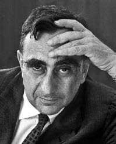

EDWARD TELLER
Jochen Winter'in uyarladığı versiyondan yapılan tercüme edilmiştir.
Macar kökenli Amerikalı fizikçi Edward Teller, asıl adıyla Teller Ed (1908 yılında Budapeşte'de doğdu ve 2003 yılında Stanford'da öldü), hidrojen bombası üzerine çalışmalarıyla tanınmıştı. Öğrenimini Almanya'da Karlsruhe Teknoloji Enstitüsü'nde, Münih ve Leipzig üniversitelerinde yaptı. 1941 yılında Amerikan vatandaşı oldu. Aynı yıl bir atom bombası yapmayı hedefleyen Manhattan Projesi'nde çalıştı. On yılı aşkın süre boyunca bu proje üzerinde Enrico Fermi'yle birlikte Chicago Üniversitesi'nde ve Los Alamos'ta (New-Mexico) çalıştı. 1952 yılında Berkeley Üniversitesi'nde fizik profesörü ve Livermore'da Radiation Laboratory (günümüzde Lawrence Livermore National Laboratory) yöneticisi oldu. 1975 yılında ders vermeyi bıraktı, ancak radyasyon laboratuarı onursal yöneticisi olmayı sürdürdü. Manhattan Projesi'nde birlikte çalıştığı birçok bilim insanının (özellikle Robert Oppenheimer'in) tersine, hidrojen bombasının babası ve bu silahın ateşli savunucusu olarak kabul edilir. Bu durum, bilim dünyası ile arasında derin bir kopuşa neden olur. Isidor Isaac Rabi, "Dünya Edward Teller'siz daha iyi olur," diyecektir.

TELLER
Her yüzyılın kendi keşifleri var. On beşinci yüzyıl Gutenberg'in matbaayı keşfinin ve Kristof Kolomb'un yolculuğunun yüzyılıdır. On yedinci yüzyıl Newton, Galileo, Descartes ve Locke'un yüzyılıdır. On dokuzuncu yüzyıl Bell ve telefonun, Edison ve elektrik ampulünün, vs. Geriye dönüp baktığınızda yirminci yüzyılı nasıl değerlendirirsiniz?
Doğrusu bana önceki dönemlerden tamamen farklı geliyor. Yüzyıl başında çok büyük keşifler yapıldı: Einstein'ın görecelik kuramı, Bohr ve öğrencilerinin kuantum mekaniği. Halk kitleleri ve hatta entelektüeller genellikle bu keşiflerden hiçbir şey anlamadılar. Ama bilgi açısından, felsefe açısından bunlar geçmişin en büyük keşifleri –örneğin dünyanın hareketi– kadar, hatta onlardan daha fazla önemli. Ne var ki anlaşılmadılar.
Ardından olaylar kendi akışlarını sürdürdü. İki dünya savaşı oldu, bunlarda teknoloji önemli bir rol oynadı. Ve kısmen de bu nedenle yeni gelişmeler ortaya çıktı. Herkesin düşündüğü şey, başlangıçta, nükleer enerji ve atom patlamalarıdır. Bunlarda insanları korkutan iki neden vardır, biri onların anlamadıkları şeydir, görecelik ve kuantum mekaniği, biri de çekindikleri şey, atom bombası ve hidrojen bombası. Sonuçta bu yüzyılın ikinci yarısında, hareket, fikir güç kazandı. Evet, çok hızlı gidiyoruz. Bunca şeyi anlamaya ve keşfetmeye hakkımız yok. Daha yavaş ilerlemeliyiz. Yoksa, kendi kendimizi yok ederiz.
Benim gözümde en büyük örnek klonlar üzerine keşiftir –daha doğrusu keşifler– bir hücreden yola çıkarak canlı yaratık imalatı. 1930 yılında bu haber sevinç çığlıklarıyla karşılanırdı. Bugün korkuluyor. Ben korkmuyorum. Ben yalnızca korkudan korkuyorum. Yolumuza devam etmek istediğimizi sanıyorum, ama keşfettiğimiz şeyin ters kullanılmayacağına emin olmak gerek.
Albert Einstein'ın keşifleri evrenimizi altüst etti.
Einstein, birbirinden ayırt edilemeyecek iki büyük keşif yaptı. İlki, zaman ile uzamın sanıldığından daha ilginç bir şekilde bağlı olduğudur. Örneğin, uzamla belirgin bir bağ kurmadan iki olayın eşzamanlı olduğu söylenemez. Diğer keşif, yer çekiminin özel bir şeyle açıklanmasıdır. Bundan söz edeceğim ama bu kadar basit açıklanamaz: Bu, uzayın eğriliğidir. Bunun kuantum fiziğiyle alakası yoktur, atomlarla pek alakası yoktur. Atomlar üzerine keşifler kuantum mekaniğinin içinde yapılmıştır. Asıl büyük keşif, birçok şeyi anlayabileceğimiz, birçok şeyi belirleyebileceğimiz, ama bunların geleceği öngörmeye asla yetmeyeceğidir. Geçmişe geri dönüldüğünde, nedenle sonuç arasındaki bağ çürütülemez. Ama bu nedensel ilişkiler kullanıldığında –ve başka da yoktur– gelecek zaman büyük ölçüde öngörülemez kalır. Serbest irade gibi bir şey elbette var olabilir. Belki de bu en büyük keşiftir, Bohr ile öğrencilerinin yaptığı. Einstein bunu anlamadı, bununla mücadele etti.
Einstein'ın çalışması hangi ölçülerde Newton'un bakışını dönüştürdü?
Newton'un özel bir rolü vardı. Newton yanlış bir şeyler söyledi, ama çok önemli ve söylenmesi gereken bir şey. Açıkça ifade etti: "Zamanın her yerinde zaman aynı şekilde akar, böylelikle, nerede olursak olalım, eşzamanlılığı tanımlayabiliriz." Einstein onu bu noktada yalanladı ve haklıydı. Newton haksızdı. Fakat Newton bu yanlış anlayışı ihtimal olarak görmeme büyük meziyetini gösterdi: onu kesin olarak tanımladı ve böylece aynı kesinlikle çürütülmesini sağladı.
Bir fizikçi olarak, tarihsel bir yaratık olan insanın gerçekten nicelendirilebilir olduğunu ve nicelendirme dolayısıyla anlaşılabileceğine inanıyor musunuz? Bilişsel süreçte, sezgi gibi, empati gibi başka perspektifler yok mudur?
Bir bilim insanı olarak söyleyebileceğim en önemli şeylerden biri tek kelimedir: Bilmiyorum. Yaşamın ne olduğunu bilmiyorum. Bilincin ne olduğunu bilmiyorum. Deniyorum ama anlamıyorum. Anlamadığım şeyden daha fazlası olabilir mi? Söyleyebileceğim tek şey, küçücük olduğumuz, ben ve kavrayış, anlamadığım çok şey olduğudur. Ben kendimi bile anlamadım. Buna en iyi cevap şudur: Tanrı bilir. Ama Tanrı nedir bilmiyoruz.
Bir fizikçi için Tanrı gibi bir şey olabilir mi?
Anlamadığım şeyler hakkında konuşmam. Tanrı sözcüğünün ne anlama geldiğini anlamaya çalıştım ama anlamadım. Dolayısıyla o en önemli sözcüğe geri dönmeliyim: Bilmiyorum.
Yirminci yüzyıl bilimin ve teknolojinin yüzyılı oldu. Size göre teknoloji sonuçta insanlığın evrensel tarihinde insanın evriminin belirleyici ve devindirici gücü müdür?
Sizin sorunuzdaki terimle hemfikir değilim. Yirminci yüzyıl başında bilim büyük ilerlemeler gösterdi, hem teori alanında hem de uygulama alanında. İkinci yarıda çevreye yararlı bir hareket gelişti. Öz itibarıyla, birçok insanın bilimin ciddi sonuçları olduğuna inanmasına dayanıyordu. Yavaşlamamız gerekiyordu. Durmalıydık. Bunun güçlü bir olumsuz hareket olduğu kanısındayım, gelecekteki ilerlememizi güçlü biçimde tartışma konusu ediyor ve bütünüyle yanlış olduğu kanısındayım. Tehlikenin korkuda yattığını düşünüyorum.
Gelecekteki biyo-teknolojik olasılık hakkında tavrınız nedir, örneğin insan klonlama? Bunun etik açıdan savunulabilir olduğu kanısında mısınız?
Sanırım, birini onayı olmadan klonlamak kabul edilebilir bir şey değildir. Bu olabilir ama yasaklamak gerekir. İkinci olarak, klonlama hayvan yetiştirmede çok önem taşıyabilecek birçok olasılığa kapı açar. Ama yine de herhangi birinin yeniden yaratılmak isteyebileceği de hayal edilebilir. Dünyaya on kardeş getirmeyi ve bunların da, umut ederim ki, birbirlerine karşı nasıl davranacaklarını belirten bir etiklerinin olmasını yasaklamak gerekir mi? Ben yasaklamam. Gelecek korkusu yeni bir şey. Ben korkmuyorum. Korkmuyorum ve bu tür değişimler meydana getirme olasılığının var olduğunu kabul ediyorum. Buna kafa yormak ve düzenlemek gerekir.
Bunun anlamı, size göre teknolojinin evrim içinde insan gelişmesinin olumlu bir gücü olduğu mudur?
Teknoloji bir güç değildir. Teknoloji, iyilik için olduğu kadar kötülük için de kullanılabilecek olasılıkların açılımıdır. 1900 yılında genellikle ilerlemenin yararlı olduğu düşünülüyordu. Bugün teknolojinin bir tehlike olduğuna iyice inanılıyor. Ben yaşlıyım, 1900'e daha yatkınım, yoksa onu takip etmiş yüz yılda teknolojiye karşı gelişmiş olan şeye değil.
Ama yirminci yüzyılda doğa bilimleri, teleskoptan tutun da bilgisayara kadar, teknolojiye iyice bağımlı oldular, bu arada nükleer enerji de var. Alan Turing'i, John von Neumann'ı, Albert Einstein'ı, Oppenheimer'i, Werner Heisenberg'i, Niels Bohr ve Max Planck'ı düşünün.
Teknoloji ile bilim müttefiktir. Yeşillerin ve yandaşlarının teknolojiye verilen öneme karşı mücadele ettikleri ortadadır. Ama aynı zamanda bilime de saldırmadan bunu yapamazlar. Bilimin kendi içinde iyi ve gerekli olduğunu, insanlık üzerinde olumlu etkisi olduğunu düşünüyorum: yalnızca insanlar için değil, bilim sayesinde yalnızca daha iyi anlamakla kalmayıp, kendimiz de daha iyi oluyoruz. Yeniliğin her birimize yararlı olacak şekilde kullanılacağına güvenmeden inanamaz insan; benim durumum da budur. İkinci dünya Savaşı'nın bize bıraktığı korkunç anılarla birlikte kuşkulanmak kesin olsa da, yine de bu dünya savaşlarının bilim tarafından değil aşırı-milliyetçilik tarafından yaratıldığını anlamamız gerekir. Bugün sanırım Avrupa'da örneğin kıtayı birleştirerek milliyetçiliği sınırlandırmak için büyük çabalar gösteriliyor. Bu çok iyi bir işaret. Böyle davranarak, iki dünya savaşı önlenebilirdi. Bilime çağrı yapmayan emin bir gelecek arayarak hata yapıldığı kanısındayım.
Bir doğa bilimcisi olarak, özellikle de nükleer enerji araştırmaları alandan biri olarak, her inceleyebildiğimizi keşfetme yönünde ahlaki bir hakkımız olduğunu düşünüyor musunuz? Francis Bacon ve başkaları –örneğin Fizikçiler adlı piyesinde Friedrich Dürrenmatt– bilginin gücünden söz ettiler. Sizin hiç ahlaki kuşkularınız olmadı mı? Bilimsel olarak mümkün olan şeyin insani sorumluluğunun üstlenilemeyeceğini hiç düşünmediniz mi? Örneğin atom bombası üzerinde çalıştığınızda ya da Reagan idaresinde "stratejik savunma inisiyatifi", daha bilinen adıyla "yıldız savaşları" olan uzayın askeri fethi programı üzerinde çalışırken...
Bilim adamı olarak yerine getirmem gereken üç görevim olduğu kanısındayım. Bir de benim görevim olmayan bir dördüncüsü var. Ben keşiften sorumluyum. Uygulamadan sorumluyum. Genel uyuşmadan, uzlaşmadan sorumluyum. Yeni keşifler üzerinde temellenen politik kararlardan sorumlu değilim. Bu tür kararı vaktiyle krallar alırdı, ardından, belki, kapitalistler alıyor, sonra da, neden olmasın, Hollywood'dakiler ya da basındakiler. Bütün bunlar yer değiştirdi. Bu kararlar bilim adamları tarafından da alınmamalı. Bir demokraside bu kararları halk almalıdır. Ve kanıtlanmış ve kanıtlanabilir hakikatler üzerine halkı bilgilendirme sorumluluğu bize düşüyor. Geri kalan için, bilim adamı olarak, iki yüz elli milyon Amerikalıdan birinin söyleyebileceğinden daha fazlasını söyleyemem. Bu yanlış sorunun, günümüzde işlerini düzgün biçimde yerine getirmiş bilim adamlarının yetkin olmadıkları alanlarda çalışmalarına bağlı olduğu kanısındayım.
Fizikçi meslektaşlarınızdan bazıları, örneğin Carl Friedrich von Weizsäcker ya da Hans Peter Dürr veya Amerika'daki başkaları son on yıllarda, nükleer enerji kullanımından uzak durdular. Bu sizde kuşkuya yol açmadı mı? Siz her zaman nükleer enerji yandaşı oldunuz, hem stratejik açıdan hem de barışçıl kullanımında...
Bu noktada son derece açık bir cevabım var: Asla kuşku duymadım. Nükleer enerjinin önemli bir bilim olduğu, önemli bir ilerleme olduğu kanısındayım. Uygulanması birçok insanı kaygılandırıp korkuttu. Ama bu onu daha az önemli kılmıyor.
Peki nükleer enerjinin yıkıcı güçlerinin baskın gelmesinden ve Oppenheimer'dan Fermi ya da Weizsäcker'e dek birçok kişinin ifade ettiği reddi doğrulamasından çekinmiyor musunuz? 1945'ten sonra, hatta Hiroşima ve Nagasaki'den sonra nükleer enerjiden yana olan ender kişilerdensiniz.
Haklı olduğuma da eminim. Bunun kanıtı elli yıl geç geldi, Sovyetler havlu attığında. Ben basitçe bilime bağlıydım. Başkalarının gerekçelerini bilemem ve bunları açıklamak da istemiyorum, ama bir şeyi görmeyi reddetmek, benim bakış açımdan, açık seçik bir hatadır.
Demek ki insan, bilimde, teoride yapabildiği şeyi, bunun uygarlık ve politika için taşıyabileceği sonuçlardan kaygı duymadan, endişelenmeden uygulamaya koymalıdır, öyle mi?
Buradaki tek kaygı, yapılanı ve yapılması gerekeni açıkça ifade etmesi ve böylelikle ortalama insanın onu anlayabilmesidir. Ardından, karar verecek olan topluluktur. Günümüzün politik durumu budur; ya da en az çelişki içeren politik tutum budur. Demokrasi budur. Bunun ideal olduğunu söylemek istemiyorum. Daha iyisine sahip olmadığımızı söylemek istiyorum. Ve de bu demokrasi cehaletle iyileşecek değildir.
Politika, felsefe ve fiziğin bağdaşmaz olduğunu mu düşünüyorsunuz?
Meslek yaşamım boyunca politika sorunu son derece sert ortaya kondu. Amerika'ya gelmeme yol açan politika oldu. Silahlar üzerinde çalışmama yol açan da bu oldu, oysa aslında hiç isteğim yoktu, çünkü fizik çok daha ilginçtir. Politikanın benim fiziğimle değil yaşamımla ilişkisi çok daha fazla.
Bunun anlamı, fizikçi olarak, her zaman bağımsız cevaplar vermeye ve kendi bilimsel çalışmanıza sadık kalmaya çalıştığınız mıdır?
Başka türlü yapamam. Fizikçi olarak, politikaya bağlı soruları çözebilirim. Beni başkalarından ayıran tek şey, teknik sorunları teknik yoluyla ele almamdır, felsefeyle değil.
Doğa bilimleri alanında insanlık tarihinin en büyük olayları sizce nedir?
Bunlar her koşulda daha önce sözünü ettiğim iki büyük keşiftir: kuantum mekaniği ve görecelilik kuramı. On dokuzuncu yüzyılda elektrik, manyetizma ve ışık üzerine çok şey öğrendik. Bunun son derece ilginç ve yararlı olduğu kanısındayım, ama bu yüzyıl başında yapılan keşiflerden daha az önemli. Bu tarihten önce elbette ki dünyanın hareketleri, yıldızların varlığı, kozmosun son derece küçük bir parçası olduğumuz keşfedilmişti. Büyük olaylar bunlardı. Bütün bunlardan daha eski keşifler de olmuştu kuşkusuz. Ama son beş yüzyılda önemli bir rol oynamış olanlar bunlardır.
İnsan tarihine dönüp baktığınızda, "ilerleme"den söz edilmesini haklı çıkaran bir tür doğrusal çizgi ayırt ediyor musunuz? Sizce, bu anlamda, tarihin devindirici güçleri nelerdir?
Doğrusal olmayan, ama hızlanma halinde olan bir ilerleme, iyi bir yaşam sürme olasılığı alanında mevcuttur. Bu, mümkün olan şeye değil, insanların istedikleri şeye bağlıdır. Benim bakış açımdan en büyük felaket, bu yüzyılın iki dünya savaşının yol açtığı o inanılmaz olaylar değildi. Otuz Yıl Savaşı otuz yıl boyunca Orta Avrupa halkını ikiye böldü. Tek sonuç bir slogan oldu: Cuius regio, eius religio. Kim ki hüküm sürer dini de o belirler. Bu önemsiz söz milyonlarca insanın hayatına mal olmuş bütün bu çatışmanın sonucu oldu. Günümüzde insan iradeleri arasındaki bu çatışmanın bütün gezegene yayıldığı koşullarda bulunduğumuzu sanıyorum. Gelişen şey, çözümler değil, çözümlenecek problemler ve aciliyet dereceleridir. Bence teknik gelişme yoksa güçlükler önem kazanır, hatta önemleri iyice artar. Ve sanıyorum ki çözümler ister istemez bilimin dışında bulunur; insanlığı birleştirebilecek olan şeyin içinde bulunur.
Bu yeni yüzyılda, dünya çapında bir tür etiğin olması gerekir mi? Yoksa böyle bir etik, insanın evrensel tarihinin ve evrimin karakteristiği olan çeşitliliğinin azaltılmasına mı yol açar?
Etik, bir çözümdür. Dünya giderek küçüldüğünden, insanların birbirlerini biraz daha iyi anlamalarını, bir denge bulmalarını sağlayan bir etik beni tamamen mutlu eder.
Peki ya modern kültür ve dinlerin çoğulluğunu ne yapacaksınız?
Çeşitlilik bir olgudur. Dönüşüm ister istemez yavaştır. Bütün sorunları çözmek istemek ya da hepsinin çözüldüğüne inanmak kesinlikle yanlıştır.
Yirminci yüzyıl başında tarihçi Oswald Spengler –bütün çelişkileriyle birlikte- Batı'nın Çöküşü'nde polemik bir metin yazarak, Batı gücünün düşüşü üzerine kehânette bulundu. Bu kehânetin gerçekleştiğine inanıyor musunuz? Tersi meydana gelmedi mi?
1900'ler civarındaki dönem mutlu bir dönemdi. Askeri çatışmanın sonuncu büyük deneyimi Napoléon savaşlarına uzanıyordu. Bu arada elbette başka savaşlar olmuştu ama bunlar önemsizdi. Son on yıllarda barış ve ilerleme özellikle Batı'da egemen oldu. Oswald Spengler Batı'nın hiç bu kadar anlamlı ilerlemeler gerçekleştirmediğini anlamıştı. Haklıydı. İki dünya savaşı ona hak verdi. Ama bizim daha iyi olmamıza yardım ettiklerini sanmıyorum. İyileşmek uzun soluklu bir görevdir, ancak ilerlemeyi kabul ederek ve halkları yakınlaştırmak için kullanarak yerine getirilebilir.